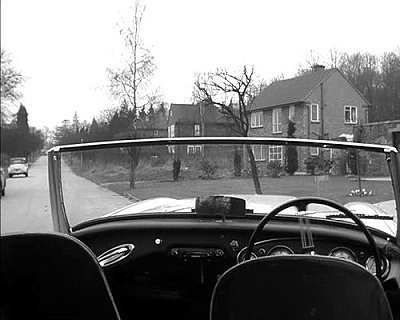
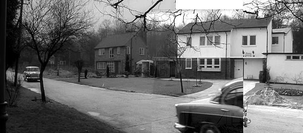
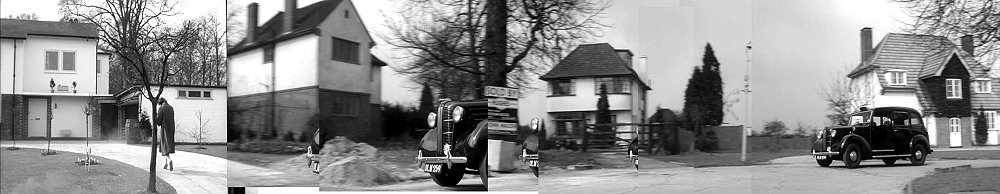
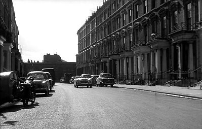
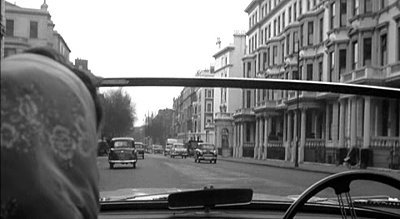

|
|
HELP FIND THE FOLLOWING LOCATIONS
PAGE 94H. G. WELLS' INVISIBLE MAN: Flight Into Darkness (Peter Maxwell: 1959)
Q21: Barham Avenue, Borehamwood - Wilson, Fisher and Sewell arrive at Doctor Stephens’ home. Wlson and Fisher break in looking for the secret file while Sewell waits in the car. Pat Stephens arrives home in taxi and disturbs the men. Later Doctor Peter Brady arrives in his Austin Healey.



Collingham Place, London, SW5 - The Invisible Man drives to Harrow Lane with Pat Stevens in his Austin Healey.
Identified by Sietse Postma, February 2024

Cromwell Road SW7, approaching the right turn for Queens Gate Gardens, SW7 - The Invisible Man drives to Harrow Lane with Pat Stevens in his Austin Healey.
(Identified by Tamara Cartwright-Loebl, December 2015)



hink you know a spot? Need a bigger image? Email me.
< Previous | Index | Avengerland | Next >
Copyright © 2024 Anthony R. McKay